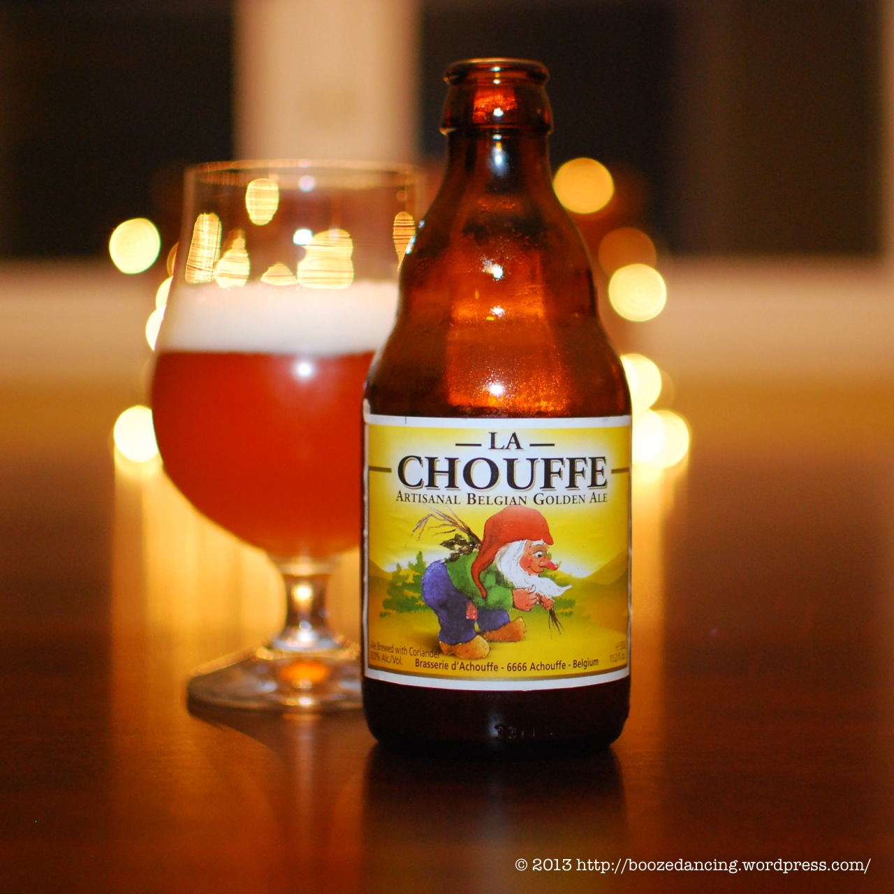
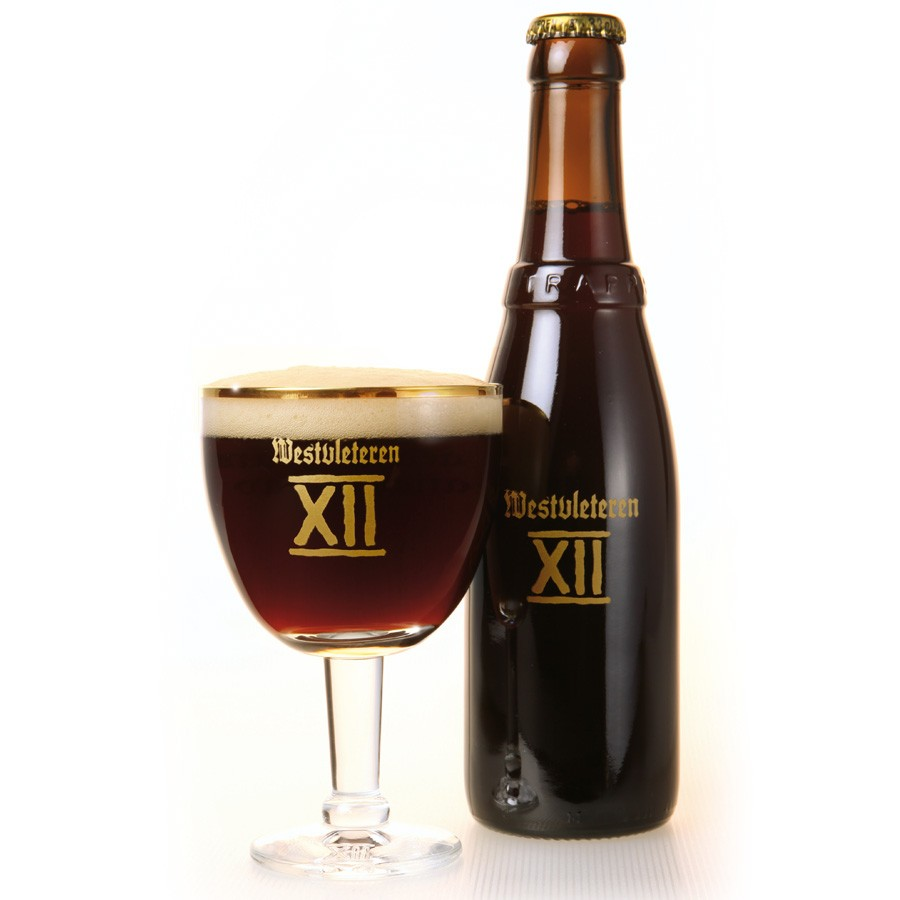
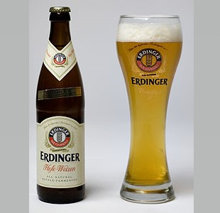
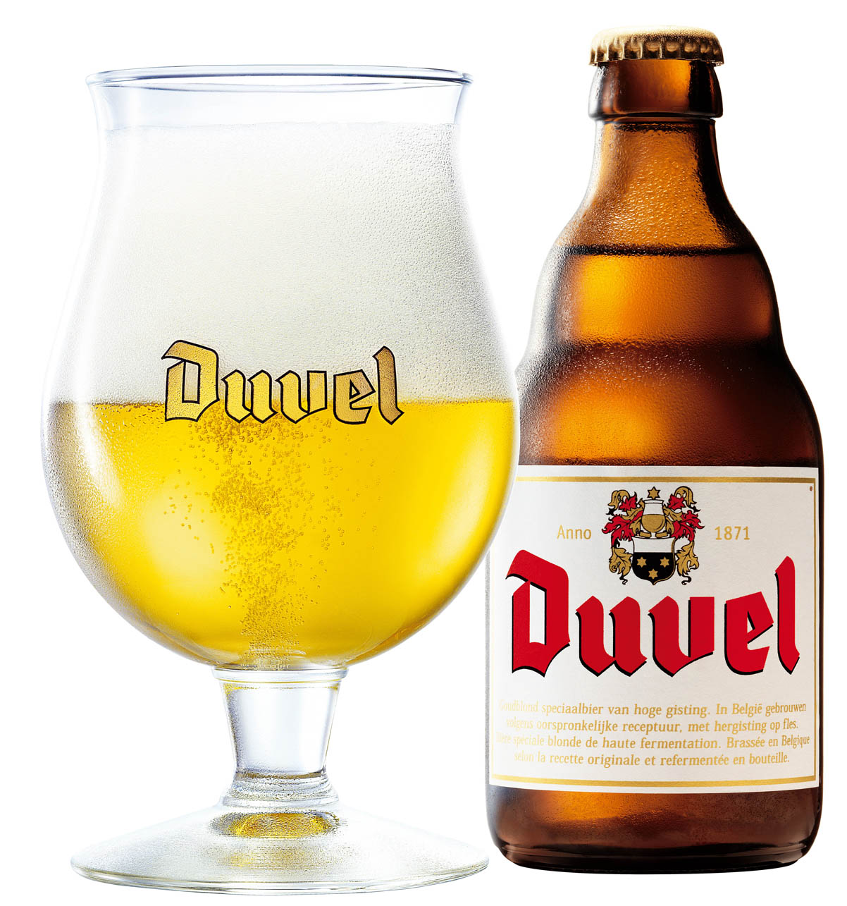
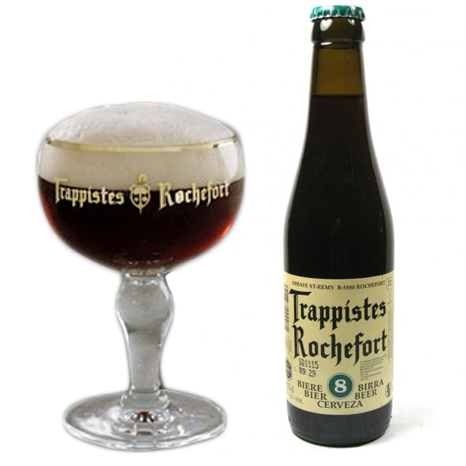

La Chouffe
La Chouffe laat in de mond toetsen van citrusvruchten vrijkomen. De verfrissende en aangenaam kruidige smaak houdt het bier luchtig. Dit goudkleurige bier met 8% alcohol en een licht hoppige smaak wist in de loop der jaren bierliefhebbers uit de hele wereld te verleiden. De unieke smaak werd trouwens al talloze keren bekroond.
Westvleteren 12
Westvleteren 12 is meesterlijk in zijn complexiteit maar heerlijk in zijn eenvoud. De sublieme zachte smaak van karamel en chocolade gaat perfect samen met de rozijnzoetige en nootachtige toetsen in het aroma. Samen met het ferme alcoholgehalte resulteert dit in een weldadige volmondigheid en een lekker lang uitlopende warme nasmaak.
Erdinger Weißbier
De kracht van dit klassieke witbier ligt in de harmonieuze balans die het bereikt tussen de verschillende aroma's. Zacht pittige aroma's van tarwe en gist vermengen zich met licht bittere hop. De verkwikkende kooldioxide zorgt voor zijn typische levendigheid. Een bijzonder bier waarvan het volle maar elegante karakter een blijvende indruk achterlaat van ultiem genot. Een echt uniek witbier!
Leffe Blond

De eeuwenoude vakkennis en de combinatie van bleekmout, water, hop en gist geven Leffe Blond een subtiele smaak en een hoogblonde kleur die het licht weerkaatst. Toetsen van vanille en kruidnagel zorgen voor een extra zachte, volle smaak. Laat deze helemaal tot zijn recht komen in het kelkglas van Leffe, zodat de zachte, verfrissende smaak ook de elegantie van dit bier ten volle weergeeft.
Duvel
Duvel is een natuurlijk bier met een subtiele bitterheid, een verfijnd aroma en een uitgesproken hopkarakter. Het unieke brouwproces, dat zo’n 90 dagen duurt, garandeert een pure stijl, een delicate pareling en een aangename alcoholzoete smaak.
Rochefort 8
Rochefort 8 is met 9,2% alcohol een flinke pater. Dit bier is een authentiek trappistenklooster gebrouwen en draagt dan ook met trots het logo 'Authentic Trappist Product'. Dit donkere bier is zo rijk aan smaak, het bevat fruitigheid van donker fruit, pruimen en vijgen. Daarnaast heeft deze 8 ook een kruidigheid en vanzelfsprekend een zoetheid van karamel en geroosterde mout. De Rochefort 8 is wereldwijd één van de meest gewaardeerde bieren. Een onbetwiste topper!